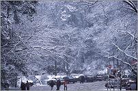

www.midphoto.cn 杨飞的摄影和写作
首页 / 记录中国专题 / 湖南省 / 长沙
图片总结长沙2002 - 2006（摄影师手记）
杨飞，2007年3月
要全面了解中国，除了上海香港等发达的地区和西藏新疆等边远地方，还需走访为数众多的中国内地大中型城市。长沙是一个较好的标本，因为她的无特色，是一颗平凡的砂粒。普通的城市，平凡的生活。
小时候我在小城市和农村长大（津市和澧县），1978年八岁时来到长沙，到现在差不多29年了，如果扣除1997到2002在新加坡学习和工作的五年，在长沙也有24年。在这个城市我从小学到大学（杜家塘小学-师大附中-湖南财经学院），从工作到辞职（省建设银行及湖南大学），从结婚到离婚，几十年忙活了一大圈之后我依然生活在长沙市麓山南路这条街上，不出意外的话估计我也将老死在这条街上，如我父亲一样。。。摄影师手记全文
特别专题：长沙网上影展
此长沙专题共有350张图片，我精选了68张组成网上影展
专题1：
堕落街
专题2：
长沙乞丐
专题3：
岳麓山与岳麓书院
专题4：
湘江与橘子洲头
图片故事：
粮店与鞋匠
其他长沙相关图文：
1，长沙吃鱼 （在湘江上，短文配图，2004年9月）
2，望城县洗心禅寺（26张图片，2006年10月21日）
3，2006年长沙街头的16张图片（2006年11月24日）

风 光 篇
建 筑 篇
人 物
静物与特写
街 头 篇